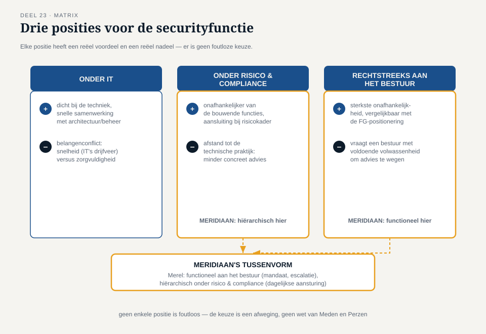

Deel 23 — Governance van security en privacy
Slidedeck · Ductus-cursus Informatiebeveiliging en Privacy · niveau 3 (expert) · deel 23 van 30
Slide 1 — Titel
Informatiebeveiliging en Privacy Deel 23 · Niveau 3 · Expert Governance van security en privacy
Slide 2 — Twee jaar later
Merel: information security officer voor de hele organisatie. Sanne: vergelijkbare groei.
De Stelselovergang. Deadline: 1 januari 2028.
Slide 3 — Hugo Prins
Bestuurder IT en risico. "Ik moet tegenover DNB kunnen zeggen: ík heb dit onder controle."
Slide 4 — Zijn vraag
"Hoe werkt dat eigenlijk, besturen op dit niveau?"
Slide 5 — Three lines of defence, organisatiebreed

Niet één programma meer. De hele organisatie.
Slide 6 — Drie lijnen op schaal
Eerste — elke operationele eenheid Tweede — Merel + Sanne + risicomanagement, geaggregeerd rapporterend Derde — onafhankelijke interne audit, ook van de tweede lijn
Slide 7 — De sleutel
De lijnen bestaan niet om het bestuur werk uit handen te nemen. Ze bestaan om overzicht mogelijk te maken zonder te verdrinken.
Slide 8 — Opdracht 23.1
Drie functies. Welke lijn?
Slide 9 — Waar hangt de securityfunctie?

Onder IT · Onder risicomanagement/compliance · Rechtstreeks aan het bestuur
Slide 10 — Drie afwegingen
Onder IT: snel, maar belangenconflict. Onder risico: onafhankelijk, maar mogelijk afstand tot de praktijk. Aan het bestuur: sterkst onafhankelijk, vraagt bestuurlijke volwassenheid.
Slide 11 — Meridiaans keuze
Functioneel aan het bestuur. Hiërarchisch onder risico/compliance. Een tussenvorm.
Slide 12 — Opdracht 23.2
Drie posities. Belangrijkste voordeel, belangrijkste risico?
PAUZE
Slide 13 — Als het bestuur Sanne negeert
Onder deadline-druk: mag dat?
Slide 14 — Geen vetorecht
FG-onafhankelijkheid betekent niet: het laatste woord. Het betekent: niet geïnstrueerd, niet gestraft voor het oordeel.
Slide 15 — Wat wél vereist is
Advies gevraagd + aantoonbaar vastgelegd. Afwijking beargumenteerd + ook vastgelegd.
Slide 16 — Terug naar de rode draad
Niet gevolgd worden ≠ overtreding. Niet aantoonbaar gewaarschuwd hebben: wél een probleem.
Slide 17 — Opdracht 23.3
Bestuur wijkt af van Sanne's advies. Toegestaan? Wat moet er staan?
Slide 18 — Hugo's eigenlijke behoefte
Geen tien losse rapportages. Eén samenhangend beeld.
Slide 19 — Het geaggregeerde risicodashboard

Niet alles tonen. Selecteren: wat ligt boven de risicobereidheid (deel 12)?
Slide 20 — Overzicht ≠ volledigheid
Alles tonen verdrinkt. Selectie en aggregatie geven overzicht.
Slide 21 — Opdracht 23.4
Waarom is "alles tonen" niet hetzelfde als "overzicht bieden"?
Slide 22 — Voor de Stelselovergang
Het invaarrisico: apart gemarkeerd. Datakwaliteit als dragende factor — komt terug in deel 24 en deel 30.
Slide 23 — Hugo's antwoord
Niet: alles zelf weten. Wel: kunnen vertrouwen op een aantoonbaar werkend stelsel.
Slide 24 — Opdracht 23.5
Vat samen: wat vereist governance wél en niet van een bestuurder?
Slide 25 — Vooruitblik
Deel 24: DORA — de vijf pijlers, het ICT-risicobeheerkader, en de actuele stand van de Cyberbeveiligingswet